~8 The Maze~
3/2/2026
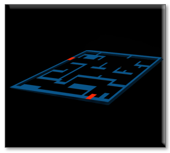
Creating a Maze Overlay
People who create game professionally will often use a maze overlay to be able to create their mazes for the rooms. This is a process which is used especially when a maze is extremely complicated. We will take a look at creating this overlay for our room; however, we will be keeping our own maze simple.
Create the Sprite
In the Asset Browser, you want to click on the room. So, we can see the properties for the room, on the left side of the app.
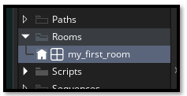On the left-hand side, get the dimensions of your room.
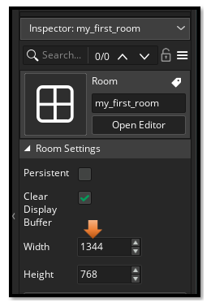Go to Photoshop
Create your canvas at the same size as your room.
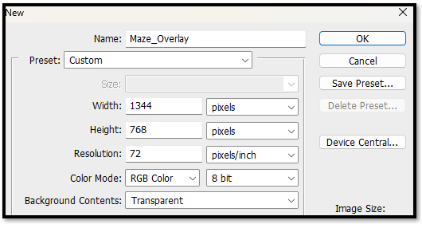
Just find a maze (online, image search) and place it on top of your new canvas that you made in Photoshop. Turn on the 32 x32 grid to place the wall map. Just remember the hero is scaled in at 64 x 64 so you path needs to be at least two grid squares in wide, in order to allow the hero to fit through the maze.
Double check your size in Photoshop for you grid size, you want it set for 32, because our wall tile pieces will look better, and fit better using this size.
Edit -Preferences- Guides, Grids & Slices…
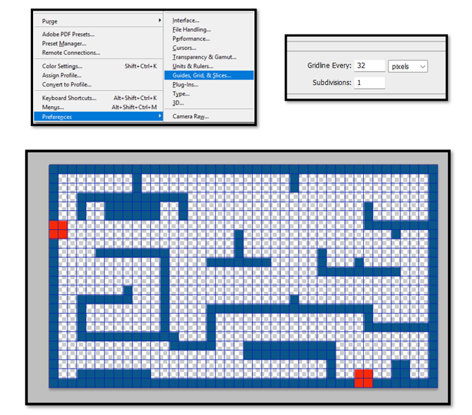
Now save your maze to your sprite file inside of Game Maker
C:\Users\Your_User_Name\GameMakerProjects\My First Game\sprites
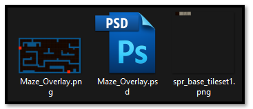Create your Sprite for the overlay, by right clicking on the sprite folder inside of Asset Browser panel. Import your Maze Overlay image to represent the sprite image.
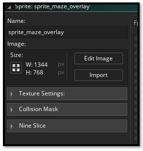Create the Overlay Object
Now we want to create the Overlay object. You know the drill. Just right click on the Object folder and create new object.
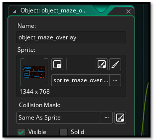Now Create a separate layer for the Overlay. This needs to be an instance layer, so make sure you select instance when you add the new layer.
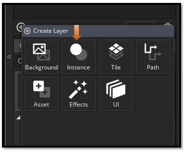You can name it if you want.
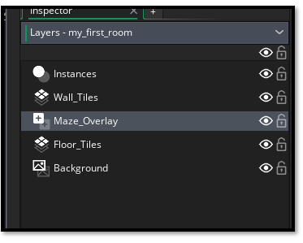Make sure this layer is indeed selected before dragging the maze object into the room. Also we want it positioned under the Wall_Tiles layer, so the wall will go over the maze overlay.
Go to the Assets tab, in the Asset Browser, so you can select the object_maze_overlay object.
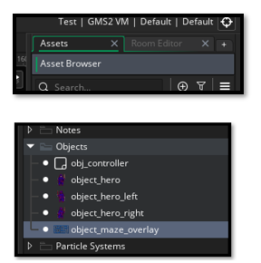
Go to the Room tab
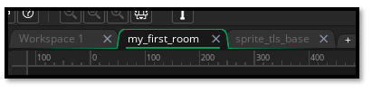Now drag the Maze object out of the Asset Browser and into the room. Place your hero at the first red door at the top, left. The other red door is where the guy will exit.
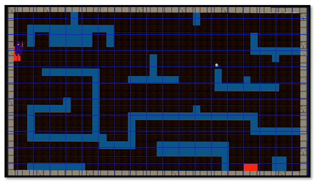Using Wall tiles to create Maze
This will make it very easy now to lay the wall tiles and create your maze.
Make sure you are now on your Wall_Tiles layer.
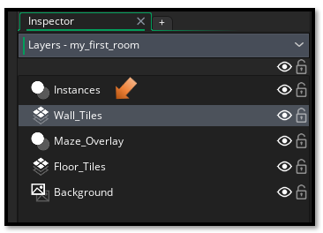Start placing your wall tile pieces on top of the Wall_Tiles layer, which is on top of the Maze_overlay layer. Turn off the eye, on the Wall overlay layer to just see the wall without the underlying map overlay.
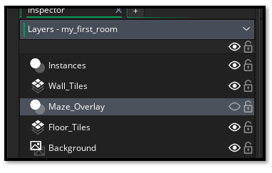
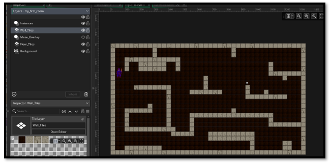